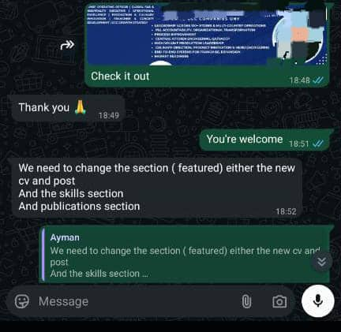
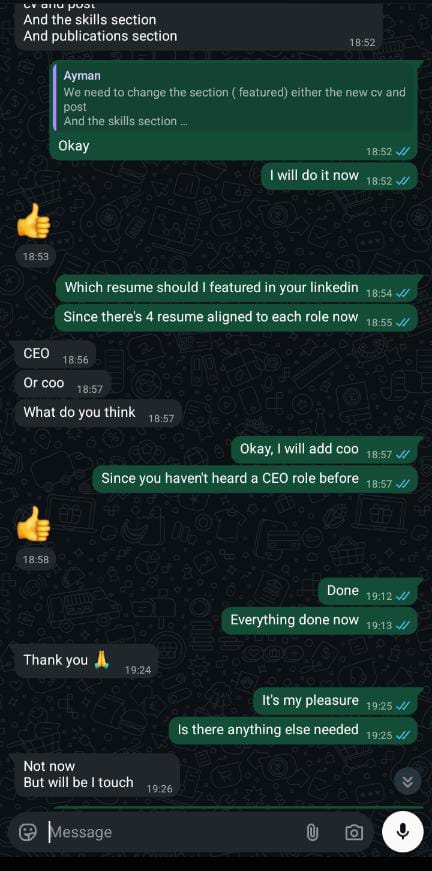

ATS resumes. LinkedIn Optimization. Executive branding built around clarity. Relevance and impact.
Experience alone does not guarantee opportunity.
Career outcomes are often shaped by clarity, positioning and communication.
I help professionals present their experience in ways recruiters and decision makers can understand quickly.
I'm Abdulrahman Olamilekan Umar, the writer behind Abdul Career Writer. As a certified resume writer and executive brand strategist, I help senior professionals and executives turn their experience into clear, credible resumes, LinkedIn profiles and career positioning.
Resume strategies built for modern hiring systems.
Executive level positioning and achievement storytelling.
Recruiter focused profile optimization and SEO.
Strategic job search support for targeted opportunities.
Clear messaging aligned to career goals.
Consistent professional identity across platforms.
Supporting documents that strengthen applications.
Selected career projects showing how I turn complex experience into clearer professional positioning.
VP Customer Operations & Transformation
Repositioning 20+ years of leadership experience into a focused executive career narrative.
The original resume contained extensive leadership experience, achievements and transformation work.
I reorganized the resume around leadership scope, business impact and measurable outcomes.
Key achievements became easier to identify while preserving the executive career story.
Executive LinkedIn positioning for senior hospitality leadership.
Profile refinements continued after initial delivery.

Client requested additional LinkedIn profile refinements.

Updates were discussed and implemented during the project.
Strategic documents supporting executive career positioning.
Strategic leadership narrative supporting targeted opportunities.
View DocumentCompensation positioning supported by leadership experience.
View DocumentTell me what you need. I will review your requirements before proceeding.
Submitting this form starts your request. Your final quote follows project review.
Need a stronger resume or LinkedIn presence? Let's discuss your goals and positioning.